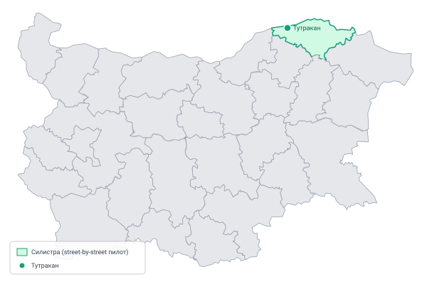

A street-level civic audit, one street at a time
This map documents the streets of Tutrakan, Bulgaria — recording what's there, what's missing, and what the official record says versus what you can see on the ground. It is a personal project, openly published.
A street-level civic audit, one street at a time.
This is a personal civic initiative, actively being built. Data is incomplete and some streets are not yet audited. Contributions and corrections welcome.
Street-By-Street (SBS) is a street-level civic audit of my hometown of Tutrakan, Bulgaria. Each audited street is documented with its physical attributes, open issues, notable assets, and a piece of local history or trivia.
My goal with this effort is a ground-truth picture of the town. The effort sits alongside official statistics, not in place of them.
Streets are audited on foot. Photos are captured via Mapillary. Observations are logged as issues (problems) or assets (things of value). Official figures from Bulgaria's National Statistical Institute are included where relevant, always with a source and date.
This is a personal project and a work in progress. Data is incomplete. Unaudited streets show available OpenStreetMap data only.
Full methodology, data taxonomy, and architecture decisions are documented in the GitHub repository.
Content is published under CC BY 4.0. You are free to reuse and adapt with attribution.
A personal initiative by yours truly. Built with Leaflet, OpenStreetMap, GitHub Pages & Claude.

| Metric | Value | Source | Date |
|---|---|---|---|
| City population | 6,582 | NSI | 31 Dec 2025 |
| Municipality population | 7,258 | NSI | 2025 |
| Municipality settlements | 15 | NSI | 2025 |
| Municipality area | 440 km² | NSI | — |
| Municipal administration | ГЕРБ (GERB) — independent candidate, ГЕРБ-supported | CIK (Central Electoral Commission) | Oct 2023 |
| Elevation (plateau) | 107 m | Wikipedia | — |
| Postal code | 7600 | — | — |
| Distance from Ruse | 61 km | — | — |
| Distance from Silistra | 60 km | — | — |
| Distance from Sofia | 371 km | — | — |
Founded by the Ancient Romans in the 1st century as Transmarisca, part of the Danubian limes. Reached its peak under Diocletian in the 4th century. Incorporated into Romania after the Second Balkan War; returned to Bulgaria via the Treaty of Craiova in 1940. Site of the Battle of Tutrakan in WWI. Tutrakan Peak in Antarctica is named after the town.
Sources: NSI (nsi.bg), Wikipedia, Tutrakan Municipality
This section reflects ground observations and may be incomplete or out of date.
Stray dogs and cats are a visible and persistent presence throughout the town. Municipal neutering programmes are legally required but inconsistently implemented.
Litter accumulation is common at street corners and road edges. Segregated collection infrastructure exists but participation is limited.
A weekly market operates in the town centre. Permanent small grocery shops are present across residential streets.
Verify location and scheduleOrthodox Christian, Muslim, Jewish, Adventist and Protestant communities are present in the town.
The Historical Museum of Tutrakan covers the town's Roman, medieval, and modern history. The Fisherman's Quarter is a heritage area.
Verify opening hoursA municipal hospital serves the area. Specialist care typically requires travel to Ruse or Silistra.
Verify current statusNo publicly accessible gym identified to date.
Outdoor exercise spaces to be documentedThe town has a functioning river port. The former ferry connection to Oltenița (Romania) no longer operates.
Have a correction or addition? This data is maintained openly — contributions welcome via the GitHub repository.